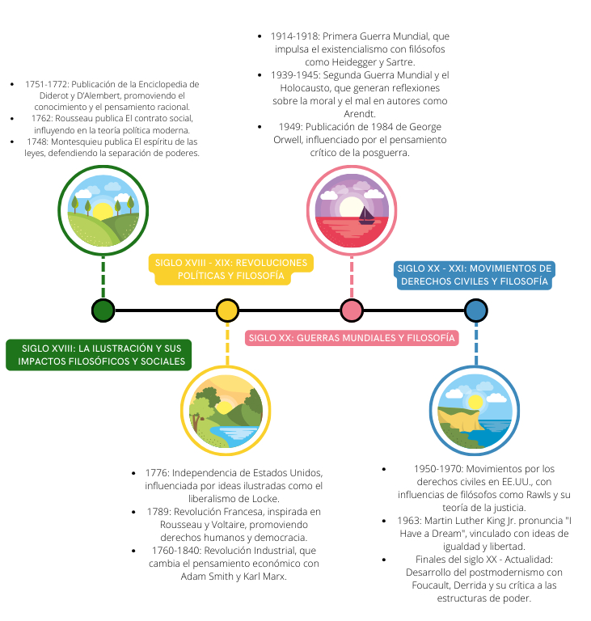
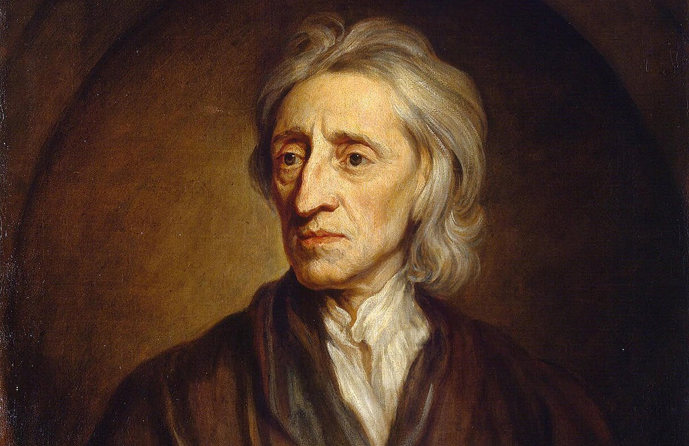

Humanismo es un concepto polisémico que se aplica tanto al estudio de las letras
humanas, los estudios clásicos y la filología grecorromana.
Ruptura con la escolástica
Ruptura con la escolástica” es un ensayo de Jaime Labastida, filósofo y poeta
mexicano, que analiza el trabajo de Agustín Rivera y Sanromán
Metodo Cientifico
El método científico se utilizó por primera vez durante la llamada «Revolución
Científica»
Humanismo
Humanismo es un concepto polisémico que se aplica tanto al estudio de las letras humanas, los estudios
clásicos y la filología grecorromana.
Por otro lado, también se denomina humanismo al «sistema de creencias centrado en el principio de que las
necesidades de la sensibilidad y de la inteligencia humana pueden satisfacerse sin tener que aceptar la
existencia de Dios y la predicación de las religiones
El Humano feliz (Happy Human) es un icono que se ha adoptado como símbolo
internacional del humanismo secular.
El humanismo es, en resumen, un componente de una gran variedad de sistemas filosóficos más específicos y de
varias escuelas de pensamiento religioso.
Mucho antes de ser ampliamente empleado en términos políticos, el
humanismo es un concepto propio de la historia de la filosofía, renovada con el Renacimiento, asociado en
particular con el movimiento representado por Erasmo, Michel de Montaigne o incluso por Guillaume Budé, a
quienes corresponde el honor de haberse interesado a la vez por la literatura de la antigüedad grecolatina y
la reflexión personal.
Ruptura con la escolástica
Ruptura con la escolástica” es un ensayo de Jaime Labastida, filósofo y poeta mexicano, que analiza el
trabajo de Agustín Rivera y Sanromán
En este ensayo, Labastida destaca que los juicios críticos de Rivera y Sanromán se basan en documentos
históricos.
Jaime Labastida.
Subraya que los autores que pusieron en relieve el atraso de la Nueva España en asuntos de ciencia y
filosofía seguían el método escolástico tradicional.
Señala que estos autores empleaban el silogismo como procedimiento de demostración, ignoraban el método
experimental en física y medicina.
Historia (Linea del tiempo)

Linea del tiempo
Crítica de la razón pura de Kant
La Crítica de la razón pura (en alemán: Kritik der reinen Vernunft) es la obra principal del filósofo prusiano Immanuel Kant.
Se trata de una indagación trascendental acerca de las condiciones epistémicas del conocer humano (la situación y
capacidad de los humanos para conocer asuntos de diverso tipo), cuyo objetivo central es lograr una respuesta definitiva
sobre si la metafísica puede ser considerada una ciencia.
Portada de la primera edición (1781).
En esta obra, Kant intenta la conjunción de racionalismo y empirismo, haciendo una crítica de las dos corrientes
filosóficas que se centraban en el objeto como fuente de conocimiento, y así, dando un «giro copernicano» al modo de
concebir la filosofía, estudiando el sujeto como la fuente que construye el conocimiento del objeto, a través de la
representación que el sujeto, mediante la sensibilidad inherente a su naturaleza, toma del objeto.
Entre las resistencias que encontró la obra se puede citar que Pío VIII, antes de llegar a papa católico, como prefecto
de la Congregación del Índice prohibió bajo amenaza de excomunión la lectura de la Crítica de la razón pura (decreto del
8 de julio de 1827).
Metodo Cientifico
El método científico se utilizó por primera vez durante la llamada «Revolución Científica»
El método combinaba conocimientos teóricos como las matemáticas con la experimentación práctica mediante
instrumentos científicos, análisis y comparaciones de resultados
Experimento de la bomba de aire de Hooke y Boyle
El objetivo de este método científico era no solo aumentar el conocimiento humano, sino hacerlo de forma que
beneficiara prácticamente a todos y mejorara la condición humana.
Los pensadores siempre habían realizado experimentos, desde figuras antiguas como Arquímedes (287-212 a.C.)
hasta los alquimistas de la Edad Media, pero sus experimentos solían ser fortuitos y muy a menudo los
pensadores intentaban demostrar una idea preconcebida.
Corrientes de la Filosofia Moderna

Empirismo
El empirismo surge en la Edad Moderna como tendencia filosófica que se desarrolla sobre todo en el
Reino Unido desde la Baja Edad Media.
Lo empírico se refería al conocimiento que los médicos, arquitectos y artistas obtenían a través de
experiencia dirigida hacia lo técnico.
Racionalismo
El racionalismo se desarrolló en Europa continental durante los siglos XVII y
XVIII.
Tradicionalmente, se considera que comienza con René Descartes y su expresión
«pienso, luego existo».
Empirismo
El empirismo es una corriente filosófica que enfatiza el papel de la experiencia y la evidencia,
especialmente la percepción sensorial, en la formación de ideas y adquisición de conocimiento, sobre la
noción de ideas innatas o tradición.
Para el empirismo más extremo, la experiencia es la base de todo conocimiento, no solo en cuanto a su
origen sino también en cuanto a su contenido. Se parte del mundo sensible para formar los conceptos y estos
encuentran en lo sensible su justificación y su limitación.
El término «empirismo» proviene del griego έμπειρία, cuya traducción al latín es experientia, de donde
deriva la palabra experiencia.
El conocimiento se obtiene mediante la experiencia
El empirismo, bajo ese nombre, surge en la Edad Moderna como fruto maduro de una tendencia filosófica que se
desarrolla sobre todo en el Reino Unido desde la Baja Edad Media. En la Antigüedad clásica, lo empírico se
refería al conocimiento que los médicos, arquitectos, artistas y artesanos en general obtenían a través de
su experiencia dirigida hacia lo útil y técnico, en contraposición al conocimiento teórico concebido como
contemplación de la verdad al margen de cualquier utilidad
En relación con la ciencia, el empirismo no se debe mezclar con la investigación empírica, ya que las
diferentes epistemologías se deben considerar puntos de vista opuestos sobre la mejor manera de hacer
estudios. Sin embargo, entre los investigadores hay cierto consenso de que los estudios deben ser empíricos.
Por lo tanto, el empirismo actual se debe entender como uno entre múltiples ideales en competencia a la
hora de obtener conocimiento.
Racionalismo
El racionalismo es una corriente filosófica que enfatiza el papel de la razón en la adquisición del
conocimiento. Contrasta con el empirismo, que enfatiza el papel de la experiencia y la evidencia, sobre todo
el sentido de la percepción.
El racionalismo se desarrolló en Europa continental durante los siglos XVII y XVIII. Tradicionalmente, se
considera que comienza con René Descartes y su expresión «pienso, luego existo»
El racionalismo sostiene que la fuente de conocimiento es la razón dada por Dios y rechaza la idea de los
sentidos, ya que nos pueden engañar; defiende las ciencias exactas, en concreto las matemáticas.
René Descartes rompió con la tradición escolástica, dando inicio a la
filosofía moderna en general y al racionalismo en particular.
El término racionalismo tiene un significado muy amplio: en general, llamamos racionalista a toda posición
filosófica que prima el uso de la razón frente a otras instancias como la fe, la autoridad, lo irracional,
la experiencia empírica, etc.
El racionalismo suele contraponerse al empirismo. En términos muy generales, estos puntos de vista no son
mutuamente excluyentes, ya que un filósofo puede ser tanto racionalista como empirista.
El racionalismo es una corriente filosófica europea que posteriormente fue subdividida por los
historiadores, en dos bloques antagónicos: racionalismo y empirismo. Comprende todo el siglo XVII y es un
largo e intenso epílogo metafísico a los grandes progresos de la ciencia del Renacimiento.